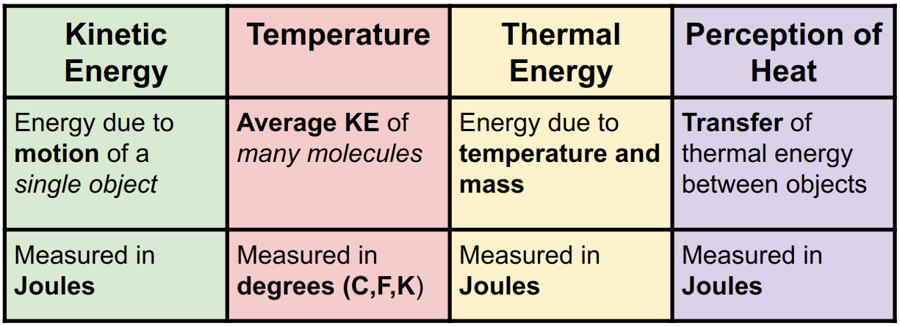

1. Simple Motion
1. Simple Motion 2. Accelerated Motion
2. Accelerated Motion 3. Projectile Motion
3. Projectile Motion 4. Newton's Laws
4. Newton's Laws 5. Momentum
5. Momentum 6. Energy
6. Energy 7. Heat
7. Heat 8. Electrostatics
8. Electrostatics 9. Circuits
9. Circuits 10. Magnetism
10. Magnetism 11. Waves
11. Waves7. Heat
Overview
Slides
- 7.1 Basics of Heat
- 7.2 Heat Transfer
- 7.3 Specific Heat
- 7.4 Calorimetry
- 7.5 Phase Change
- 7.6 Radioactive Decay
- 7.7 Fission and Fusion
Skills and Understanding
- Understand convection, conduction, and radiation.
- Identify types of heat transfer.
- Analyze temperature change within and across phases, including solid, liquid, and gas.
- Calculate heat of fusion, heat of vaporization, and latent heat.
- Determine a substance using calorimetry calculations.
- Recognize descriptions and describe alpha, beta, and gamma radiaiton.
- Recognize descriptions and describe fission and fusion.
Equations
\[ \begin{array}{cc} Q = m c \Delta t \quad \quad \quad Q = mh \quad \quad \quad Q_{A} = -Q_{B} \\ \end{array} \]Vocabulary
- Conduction: Heat transfer method that relies on transfer of kinetic energy by contact.
- Convection: Heat transfer method that relies on current of displaced fluid.
- Heat: The transfer of thermal energy from hot to cold.
- Kinetic Energy: Energy due to motion.
- Radiation: Heat transfer method that relies on transfer of electromagnetic waves.
- Specific Heat Capactiy: Property of matter that describes how much thermal energy is needed to change the temperature of something by 1 degree.
- Thermal Conductor: Material that allows thermal energy to transfer easily.
- Thermal Energy: Energy due to temperature and mass.
- Thermal Equilibrium: When objects in thermal contact reach the same temperature.
- Thermal Insulator: Material that traps thermal energy and transfers it slowly.
- Temperature: Measure of the average kinetic energy of molecules.
- Thermal Expansion: When molecules move further apart because of increased temperature.
7.1 Introduction to Heat
Temperature is a scale for measuring the average kinetic energy of a group of molecules. There are multiple scales for temperature including Celsius, Fahrenheit, and Kelvin.

A thermal conductor is a mterial which quickly transfers heat throughout itself. Most metals are thermal conductors. A thermal insulator is a material which does not transfer heat well. Examples include wood and air.
7.2 Heat Transfer
Heat transfer describes the movement of heat energy.
Conduction is heat transfer through contact. Kinetic energy is transferred rom one molecule to another through collisions.
Convection is heat transfer through currents. Due to thermal expansion, hotter fluids (liquids or gases) are less dense so they rise. Cooler fluids sink, may heat up, and then continue the process of convection.
Radiation is heat transfer by electromagnetic waves. The Earth, for example, receives a tremendous amount of heat energy through the radiation emitted by the sun.
7.3 Specific Heat Capacity
Different substances change temperature at different rates. Specific heat is a property of matter and relates the change in temperature of a substance and the amount of heat energy it gains or loses. We will measure specific heat capacity in \(\frac{\text{J}}{\text{g}}^{\circ}\text{C}\).
Here is a table of some specific heat capacities:
| Material | Specific Heat (J/g \(^\circ\)C) |
|---|---|
| Solid water | 2.10 |
| Liquid water | 4.18 |
| Water vapor | 2.01 |
| Iron | 0.45 |
| Aluminum | 0.90 |
| Silver | 0.24 |
| Copper | 0.39 |
| Wood | 1.76 |
| Vegetable oil | 2.00 |
The heat equation which uses specific heat is \[Q = mc \Delta T\] where \(Q\) is heat energy gained or lost, \(m\) is mass (in grams), \(c\) is the specific heat, and \(\Delta T\) is the change in temperature.
7.4 Calorimetry